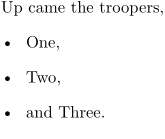

Syntax
| \mar[ref,ref,...]{...} | |
| [ref,ref,...] | |
| {...} | text |
Description
Used in itemizations. Prints an item with a remark in the margin. By default the margin text is set in typewriter font.
Example
-
Up came the troopers, \startitemize[marstyle=italic] \item One, \mar{(rit.)} Two, \item and Three. \stopitemize
- 
See also
Help from ConTeXt-Mailinglist/Forum
All issues with: